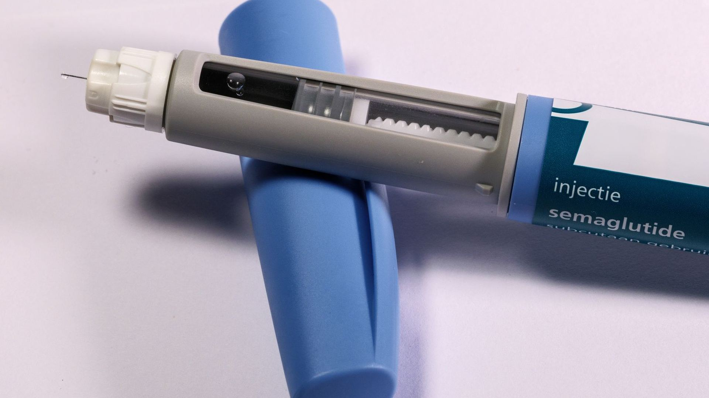

Medical Devices Are All We Do. No Pharmaceutical Work. No Divided Attention.
PT Medivice Global CRO specializes exclusively in medical device clinical research — from clinical investigation to clinical evaluation.
Built Around a Difference That Matters
Medical device studies are not drug studies. The evidence expectations, risk framework, role of the Notified Body or national authority, and relationship between clinical evidence and technical documentation are fundamentally different. Medivice Global CRO was built around that difference.
Led from Jakarta by clinicians and regulatory professionals who have been through Notified Body review, we work backwards from the assessment your evidence will ultimately face. The goal is simple: help sponsors avoid two of the most expensive outcomes in device development — collecting data they never needed, and discovering too late that they needed data they never collected.
What We Are Building, and How We Work
To become Southeast Asia's most trusted medical device CRO, generating clinical evidence that creates a lasting global impact.
To empower medical device innovators by delivering scientifically rigorous clinical evidence, developing exceptional professionals, and advancing healthcare through integrity, excellence, and innovation.
We believe meaningful work begins with a clear purpose. Every study we conduct contributes to safer, more effective medical technologies for patients worldwide.
We strive for exceptional quality in science, execution and service — never settling for what is merely adequate.
We embrace innovation while staying grounded in sound science, evolving regulations and the changing needs of the industry.
We act with humility, accountability and professionalism, placing the interests of patients, sponsors, investigators and colleagues above personal recognition.
We treat every person with respect, value every partnership, and conduct ourselves with honesty, transparency and integrity.
How We Engage
End-to-end study delivery under one contract.
Monitoring, data management or medical writing only.
Strategy, gap analysis, feasibility, second opinion.
Taking over a study or dossier that has stalled.
In-country execution for a global CRO or sponsor.
Ongoing CER and PMCF maintenance across a portfolio.
Whatever the shape of the engagement, one named project manager owns it end to end — and the people who scope your study are the people who run it.
Let's Talk About Your Evidence
We start every conversation by understanding the evidence question — before scoping a study or a document.
Talk to Us